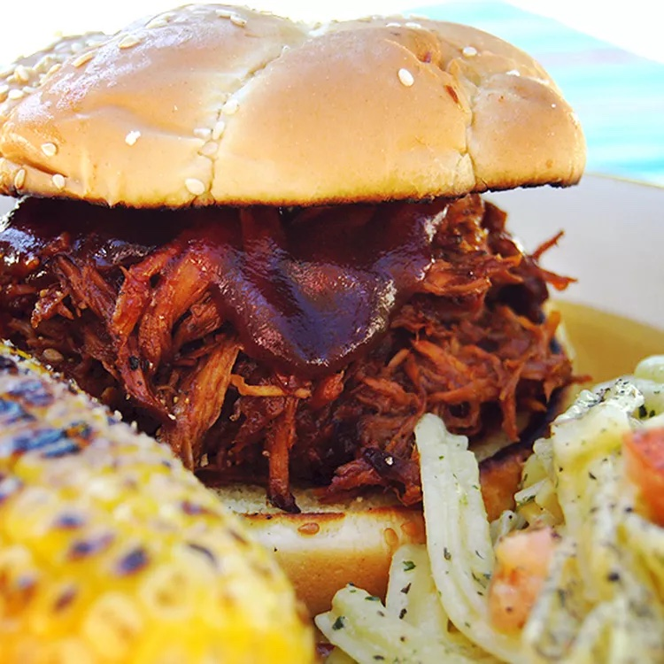

Pulled Pork Recipe

Ingredients
1 tsp vegetable oil
2 lb pork loin
1 cup Stubbs BBQ Sauce
2 tbsp worcestershire sauce
1/2 cup apple cider vinegar
1/2 cup chicken broth
1 chopped onion
Cooking Steps
- Pour oil into the slow cooker, then place the roast on top of the oil.
- Add the remaining ingredients to the Crock-Pot.
- Shred the pork and return it to the slow cooker to combine it with the juices.